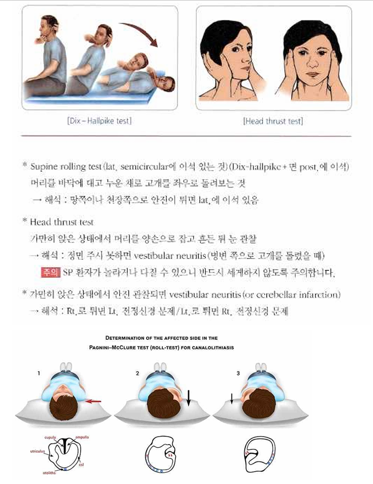
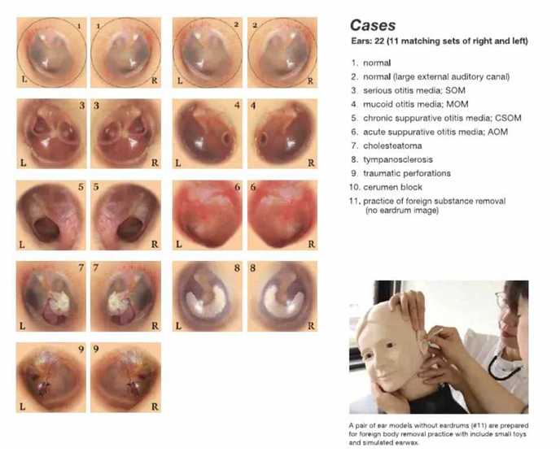

31. 어지럼
평가목표 1) 전정성/비전정성, 말초성/중추성 구별해 적절한 진단 및 치료 계획 수립 2) 응급치료가 필요한 환자 감별 | ||||
구체적인 성과 | ||||
병력 청취
| 어지럼의 특징(회전성) | 회전성: 전정기관/소뇌 문제
빙글빙글 🡪 BPPV, 전정신경염, 메니에르병, 소뇌경색, 전정편두통, 뇌종양 | 비회전성: 전신 내과/신경계 퇴행 문제
아찔함 🡪 기립저혈압, 혈관미주신경실신 전신 무력감, 식은땀, 안색 창백 🡪 빈혈/저혈당 붕 떠있거나 세상이 흔들리는 느낌 🡪 불안장애 | |
|
| 지속 시간: 초 단위 🡪 BPPV 분~시간 단위 🡪 메니에르 수일 이상 🡪 전정신경염/뇌경색 | ||
| 어지럼의 동반증상(구토 등) | 동반 증상: 신경학적 결손(복시, 마비, 보행 장애) 🡪 중추성 (Brain CT/MRI 필수) 청각 증상(이명, 난청) 🡪 말초성 (메니에르 등) | ||
| 어지럼의 유발 요인 | 유발 요인: 특정 자세(BPPV), 기립 시(저혈압), 스트레스(실신/불안). | ||
| 환자/의사관계 |
| ||
신체 진찰 | 신경계 이상 확인하기 위한 신경진찰 원인 감별을 위해 필요한 신체진찰 | VS 확인, 두부외상, 눈/입(빈혈/탈수) 뇌신경검사 청력검사 소뇌검사 Dix hallpike 사지감각/운동검사 | ||
| 필수 임상술기 | 이경검사 혈압측정 안저검사 | ||
| 환자/의사관계 | 환자 부축해주기! 손잡아주기! 기댈 수 있게 해주기! | ||
진단 및 치료 | 신경계질환 및 기타 원인에 의한 어지럼 진단계획 | 전정기능검사 중 하나가 비디오안진검사 “특수한 카메라 달린 안경쓰고 눈 움직임 기록, 어지럼증 귀/뇌에서 오는지 파악” 기립경검사: 누운 상태에 비해 일어선 상태의 혈압 20/10 이상 차이 귀검사: 청력/이경검사 영상: 뇌 CT, MRI 혈액검사: 혈당, 전혈구, 전해질 | ||
| 응급치료가 필요한 환자를 선별하고 치료계획 수립 | 소뇌경색 등 뇌졸중, 저혈당, 심한 저혈압/쇼크 | ||
| 원인 질환의 치료 계획 수립 | 양성돌발체위현기증 BPPV | 에플리 수기/이석정복술 | |
|
| 전정신경염 | BZD, 항구토제, 전정 재활운동 경과관찰 | |
|
| 메니에르병 | 저염식, 이뇨제, 항구토제 급성기 🡪 Diphenhydramine(항히스타민제), Diazepam(안정제/항구토제) 장기 🡪 Thiazide, 내림프낭감압술 | |
|
| 소뇌경색*응급 | 혈전용해제/혈전제거술, 항혈소판제, 항응고제, 뇌감압술 | |
|
| 파킨슨병 | Levodopa+Carbidopa, Dopamine agonist 재활치료 | |
|
| 전정편두통 | 급성기 🡪 NSAID Triptan 제제(편두통 약) | |
|
| 뇌종양 | 방사선치료 항암치료 수술 감마나이프 | |
|
| 기립저혈압 | 유발 약제/인자 중단 움직이기 전에 다리를 먼저 움직이고 천천히 일어나기 Midodrine(말초혈관수축제) 수분섭취 | |
|
| 저혈당 | 당류 공급(D5W, 사탕) Insulin dosage 조절 | |
|
| 빈혈 | 철분 보충 | |
|
| 당뇨병신경병증 | 혈당조절, 생활습관개선 | |
|
| 혈관미주신경실신 | 유발 인자 중단/회피 Midodrine(말초혈관수축제) | |
|
| 불안장애 | SSRI, BZD, 인지행동치료 | |
|
| 과호흡증후군 | SSRI, BZD, 재호흡 주머니 | |
환자 교육 | 응급치료가 필요한 환자에게 수술의 필요성 설명 | "검사 결과, 환자분의 어지럼증은 귀의 문제가 아니라 뇌(소뇌/뇌간)의 혈관이 막혔거나(뇌경색) 터진(뇌출혈) 상태로 확인되었습니다. 이는 생명과 직결될 수 있는 응급 상황이며, 즉각적인 조치가 이루어지지 않으면 뇌 손상이 급격히 진행될 수 있습니다." 뇌경색 🡪 혈관 뚫어줘서 뇌손상 방지, 마비 보행장애 후유증 최소화 뇌출혈/뇌압상승 🡪 고인 혈종 제거하거나 뇌압 낮추는 수술 필요 | ||
| 생활습관 개선 교육
말초성 어지럼 비약물 치료
중추성 어지럼 대처 방법 | 스트레스, 과로, 피로 불면 해결 메니에르병 저염식 권장, 술, 커피, 담배, 스트레스 피하기 어지럼이 발생해 쓰러질 것 같으면 안정된 곳으로 몸 옮겨 머리를 다치지 않도록 조심 BPPV는 병원에서 치료받고 난 후 상체 약 45도 높인 자세로 하루 정도 쉬기 혈당관리, 빈혈치료, 수분 적절히 섭취 | ||
질환 | 질환 설명 | 병력청취 | 신체진찰 | 검사 | 치료 |
양성돌발체위현기증 BPPV 4+1 | 귀속의 작은 돌(이석)이 제자리를 벗어나 굴러다니는 병 | 고개를 특정 방향으로 돌리거나/침대에서 일어날 때 발생 한번에 30초 정도 심하게 지속 빙글빙글 도는 느낌 = 회전성 아침에 심하고 오후에 경해짐 오심/구토 Dix-hallpike test 안진/어지럼 +/+ | Dix-hallpike test, 전정기능검사, 머리회전검사 | 에플리 수기/이석정복술 | |
전정신경염 2+1 | 전정신경(평형 담당)에 염증이 생겨 한쪽 기능이 마비되는 질환 | 급성 발병, 수 시간~수 일 지속 최근 상기도 감염 선행 오심/구토 난청/이명 없음 빙글빙글 도는 느낌 = 회전성 자발안진 +, 두부충동검사 병변쪽 + | 전정기능검사, 청력검사 | BZD, 항구토제, 전정 재활운동 경과관찰 | |
메니에르병 3+1 | 귀 안쪽의 내림프액이 과도하게 많아지는 '내림프 수종'이 원인🡪 귀속의 압력이 높아지며 생김 | 20분에서 수시간 지속 🡪 저절로 회복, 반복적으로 재발 빙글빙글 도는 느낌 = 회전성 이명, 청력 저하, 이충만감 | 청력검사, 전정기능검사, 전기와우도검사, 두경부 CT/MRI | 저염식, 이뇨제, 항구토제
급성기 🡪 Diphenhydramine(항히스타민제), Diazepam(안정제/항구토제) 장기 🡪 Thiazide, 내림프낭감압술 | |
소뇌경색*응급 0+1 | 뇌로 가는 혈관이 막혀 조직이 손상되는 질환 | 급성 발병, 고령 지속시간 다양, 가만히 있어도 어지럼 빙글빙글 도는 느낌 = 회전성 심한 자세 불균형, 편측마비, 구음장애, 감각이상 고혈압, 고지혈증 과거력 | 뇌 CT/MRI, 뇌혈관조영술 | 혈전용해제/혈전제거술, 항혈소판제, 항응고제, 뇌감압술 | |
파킨슨병 | 도파민 부족으로 인해 자세 유지 반사가 소실되는 퇴행성 질환 | 손떨림, 행동 느려짐, 균형장애, 보행장애 | 뇌 CT/MRI, 뇌 PET | Levodopa+Carbidopa, Dopamine agonist 재활치료 | |
전정편두통 | 뇌의 통증 및 감각 조절 이상으로 인해 편두통과 함께 어지럼이 발생하는 질환, 빛이나 소리에 예민 | 수 시간 지속되는 어지럼 동시에 편두통에 합당한 두통 발생 빙글빙글 도는 느낌 = 회전성 | - | 급성기 🡪 NSAID Triptan 제제(편두통 약) | |
뇌종양 | 뇌에 종양 | 두통, 오심, 구토 체중감소 빙글빙글 도는 느낌 = 회전성 | 뇌 CT/MRI, 뇌 PET | 방사선치료 항암치료 수술 감마나이프 | |
기립저혈압 | 갑자기 일어날 때 하반신에 쏠린 혈액이 뇌로 충분히 전달되지 않아 발생 | 앉았다 갑자기 일어서는 상황 눈 앞이 깜깜해지는 느낌 아찔함 최근 출혈 또는 탈수 병력 탈수 증상 고혈압 과거력 | 누운 상태에 비해 일어선 상태의 혈압 20/10 이상 차이 = 기립경 검사 | 유발 약제/인자 중단 움직이기 전에 다리를 먼저 움직이고 천천히 일어나기 Midodrine(말초혈관수축제) 수분섭취 | |
저혈당*응급 | 혈중 포도당 농도가 급격히 낮아져 뇌 에너지가 고갈된 상태 | 식은땀, 두근거림 동반 오랜 공복 후 발생, 당뇨병으로 인한 인슐린 사용 아찔한 양상 | 혈당검사 | 당류 공급(D5W, 사탕) Insulin dosage 조절 | |
빈혈 | 혈액 내 헤모글로빈 부족으로 뇌에 산소 공급이 원활하지 못한 상태 | 흑색변, 혈변, 피로 동반 아찔한 양상 식은땀 | 전혈구검사 | 철분 보충 | |
당뇨병신경병증 | 고혈당으로 인해 발끝의 말초 신경이 손상되는 합병증 | 당뇨 병력, 조절되지 않는 당뇨 말초감각이상, 위마비 동반 가능 | 혈당검사, 당화혈색소, 자율신경검사 | 혈당조절, 생활습관개선 | |
혈관미주신경실신 | 스트레스나 통증에 의해 부교감신경이 과하게 활성화되어 혈압과 심박수가 급락하는 현상 | 오래 서있거나/과하게 긴장하거나/혼잡한 환경에서 발생 아찔함 + 메스꺼움 | 기립경 검사 | 유발 인자 중단/회피 Midodrine(말초혈관수축제) | |
불안장애 | 심리적 불안으로 인해 뇌의 자율신경계가 과민해진 상태 | 불안하거나 가슴이 답답하면서 어지럼 발생 붕떠있거나 세상이 흔들리는 느낌 |
| SSRI, BZD, 인지행동치료 | |
과호흡증후군 | 불안 등으로 숨을 너무 빠르고 깊게 쉬어 체내 이산화탄소가 부족해지는 상태 | 스트레스 등의 유발 요인으로 과호흡 후 어지럼 발생 손발 저림 |
| SSRI, BZD, 재호흡 주머니 | |
자기소개/환자확인/환자동의/활력징후 “진료 대기 시간이 길었는데 오래 기다리시느라 고생 많으셨습니다./몸도 좋지 않은데 병원까지 오셔서 기다리시느라 고생이 많으셨습니다.” | ||
O | 언제부터 갑자기/서서히 특정 상황 | |
L | - | |
D | 지속/있다 없다 얼마나 자주 얼마나 오래 | |
Co | 악화/유지 | |
Ex | 이전에도? 🡪 치료 | |
C | 개방형: “어떻게 어지러운지 자세히 설명해주시겠어요?” 양상: 빙빙/아찔 정도: -서있기힘듬/쓰러진적/의식잃은적/가만있을떄 -얼마나 심한지: QoL 🡪 “많이 힘드셨겠습니다.” | |
A | 개방형: “다른 불편한 곳은 없으세요? 네. 그럼 제가 몇가지 자세하게 확인해보겠습니다.” 암기법: 응전전저정 소소메편 (응급/전신/전정신경/저혈당/정신/소뇌/소화기/메니에르/편두통) 또다른 암기법: 응전 정호귀신 (응급/전신/정신/호흡/귀/신경) 응 전 소 신경 감기 귀 파 정신 | |
| 전신 | Fever/Chill Fatigue/Anorexia WL/Edema |
| 응급(탈수/빈혈) | 호흡곤란/어지럼/두근거림/목마름 |
| 저혈당 | 공복감, 식은땀, 식후회복 |
| 소뇌경색 | 시력저하, 시야/발음/보행장애, 팔다리 감각/근력저하 |
| 전정신경염 | 최근 감기, 발열/기침/가래/콧물 |
| 메니에르병 | 귀물참/귀통증, 이명/청력감소 |
| 정신 | 우울/불안/공황 |
| 편두통 | 두통 🡪 전조증상(시야흐림/번쩍, 빛소리과민, 맥박성) |
F | 개방형: “증상이 어떨 때 좀 괜찮아지고/심해지나요?” | |
| 식사 | 식후 호전 -저혈당 |
| 자세 | 고개 돌릴 때/돌아 누울 때(어느쪽) 앉았다 누울 때/일어설 때 -기립성 저혈압 가만히 있어도 |
E | 건강검진 + 예방접종 + 감기 | |
요약 및 PPI | “지금까지 말씀하신 것을 요약하자면 ~.” “제가 질문을 많이 했는데 잘 대답해주셔서 감사합니다. 몇가지만 더 여쭙도록 하겠습니다.” | |
외 | 수술/두부외상 | |
과 | HTN/DM/고지혈증/심뇌혈관질환/정신과 | |
약 | 약물/영양제/한약/즙 약 증량/변경 | |
사 | 술/담배/커피/직업/스트레스 | |
가 | CC 심뇌혈관질환(뇌졸중) | |
여 | 월경력: LMP 🡪 규칙성/양 | |
요약 및 PPI | “네. 이로써 문진은 마치도록 하겠습니다.” “혹시 더 말씀해주시고 싶은 것 있으실까요? 편하게 말씀해주세요.” | |
환자동의 “정확히 어디가 아픈지 확인하기 위해 신체진찰을 진행해야 합니다. 과정 중에 신체 노출과 접촉이 있을 수 있으나, 불편하시지 않게 필요한 부분만 노출하고 최대한 신속히 확인하겠습니다. 괜찮으실까요? 중간중간 불편하시면 언제든 말씀해주세요.” | |||
기본 신체진찰 | VS 확인, 두부외상, 눈/입(빈혈/탈수) | ||
신경계 | 자세 | 침대에 앉아서 진행, 환자 부축해주기 | |
| 뇌신경 | 자발안진 “제 코 보세요.” 🡪 HIT “고개 고개돌려도 제 코 보세요.” 🡪 동공반사 🡪 안구운동검사: 천천히 8방향 -> 감각검사: 눈감고 휴지/해머 이마/볼/턱 “느껴지시나요/동일한가요” 운동검사: “눈 꽉 감아보세요” 🡪 눈 벌려지는지 “이 꽉 깨물어보세요” 🡪 턱 근육 만지기 “이 해보세요/이마 주름 만들어보세요” | |
| 팔다리 | 감각검사: 눈감고 휴지/해머 위팔/아래팔/허벅지/종아리 “느껴지시나요/동일한가요” 운동검사: 팔 겨드랑이 들고 흔드는 자세 🡪 위아래 버티기 가드 자세 🡪 앞뒤 밀기 허벅지 씨름 🡪 벌리기/모으기 종아리 잡고 차기/뒤로 당기기 DTR: Biceps 엄지손가락쪽(팔바깥쪽) 안에 두드리기 🡪 오른손으로 팔꿈치 잡으면서 팔 지탱+힘줄부분 엄지로 눌러 오른엄지로 누른 부분 위를 해머로 치기 무릎 한손으로 허벅지 눌러서 고정 🡪 다른손으로 두드리기
+Babinski) 해머 뒤로 발바닥 안쪽부터 새끼까지 긁고 다시 엄지 쪽으로 틀어서 긁는 ㄱ자 모양 긁기 | |
| 수막자극징후 | 누워서 [Kernig] 바로 누워서 🡪 무릎/발목 잡아주고 ㄱ자로 위로 들어올리며 무릎 펴기 [Brudzinski + Neck stiffness] 바로 누워서 🡪 목 들어올리기 🡪 엉덩이/무릎 들림 = B (+) 다리 ㅅ자로 세우고 🡪 목 들어올리기 🡪 통증 호소 = N (+) | |
청력검사 | Weber | 머리 중앙에 진동을 대고 어느 쪽에서 더 크게 들리는지 여쭤볼게요. “어느 쪽에서 더 크게 들리세요?” “양쪽이 똑같이 들리세요?” 결과 해석: 정상 = 가운데에서 들림, 전도성 난청 = 병변 쪽으로 소리 치우침 (막힌 귀가 더 크게 들림) 감각신경성 난청 = 정상 쪽으로 소리 치우침 (신경 정상인 쪽 더 잘 들림) | |
| Rinne | 골전도(BC) 튜닝포크를 귀 뒤 유양돌기(mastoid)에 댐 🡪 “소리 들리세요?” 🡪 “안 들릴 때 말씀해주세요” 2 안 들린다고 하면 바로 공기전도(AC) 튜닝포크를 귀 앞(외이도 앞)으로 이동 🡪 “지금도 들리세요?” 결과 해석: 정상/감각신경성 난청 = AC > BC → 린네 양성 전도성 난청 = BC > AC → 린네 음성 | |
| Ménière disease (내이질환), Labyrinthitis (내이+전정 침범) → 감각신경성 난청 Vestibular neuritis (전정만 침범), BPPV (이석문제) -> 난청없음 중이질환 -> 전도성 난청 | ||
소뇌 | [앉아서] Finger to nose : 코에 손 댔다가 제 손가락 찍기 🡪 양손+왼/우/중앙 Rapid alternating : 허벅지에 손 올리고 열라뒤집기 | [서서] Tandem/ Romberg : 일단 한번 걸어보세요 🡪 돌아올 땐 앞발 발가락 끝에 다음발 뒷꿈치 붙여서 걸어요 🡪 양발 앞꿈치 뒷꿈치 다 붙여서 서 눈감아보세요 (팔 환자 주변으로 뻗어서 보호) | |
Dix hallpike | 침대 다리 편 상태로 앉으면 머리 45도로 돌린 다음에 확 빠르게 눕힘 많이 어지러울 수 있다 경고 필요  | ||
이경검사 |   | ||
| Ménière disease | 대개 정상 고막 (내이질환 = endolymphatic hydrops) | |
| Vestibular neuritis | 대개 정상 고막 (전정신경 염증이라 중이/고막 병변 없음) | |
| Labyrinthitis
| 대개 정상 고막 (단, 중이염에서 파급된 경우는 중이염 소견 동반 가능) | |
| AOM (acute otitis media) | 고막 발적/팽윤, 중이 삼출/고름
| |
| OME (otitis media with effusion) | 탁한 고막, 공기-액체층, 후퇴(retraction), 움직임 감소 등 비정상 | |
| COM (chronic otitis media) | 고막 천공, retraction, 혼탁/두꺼운 고막 cholesteatoma 가능, 만성 분비 | |
혈압측정 |
|
| |
안저검사 |
|
| |
진단검사 | |
전정기능검사 중 하나가 비디오안진검사 “특수한 카메라 달린 안경쓰고 눈 움직임 기록, 어지럼증 귀/뇌에서 오는지 파악” 기립경검사: 누운 상태에 비해 일어선 상태의 혈압 20/10 이상 차이 귀검사: 청력/이경검사 영상: 뇌 CT, MRI 혈액검사: 혈당, 전혈구, 전해질 | |
치료 | |
양성돌발체위현기증 BPPV | 에플리 수기/이석정복술 |
전정신경염 | BZD, 항구토제, 전정 재활운동 경과관찰 |
메니에르병 | 저염식, 이뇨제, 항구토제 급성기 🡪 Diphenhydramine(항히스타민제), Diazepam(안정제/항구토제) 장기 🡪 Thiazide, 내림프낭감압술 |
소뇌경색*응급 | 혈전용해제/혈전제거술, 항혈소판제, 항응고제, 뇌감압술 |
파킨슨병 | Levodopa+Carbidopa, Dopamine agonist 재활치료 |
전정편두통 | 급성기 🡪 NSAID Triptan 제제(편두통 약) |
뇌종양 | 방사선치료 항암치료 수술 감마나이프 |
기립저혈압 | 유발 약제/인자 중단 움직이기 전에 다리를 먼저 움직이고 천천히 일어나기 Midodrine(말초혈관수축제) 수분섭취 |
저혈당 | 당류 공급(D5W, 사탕) Insulin dosage 조절 |
빈혈 | 철분 보충 |
당뇨병신경병증 | 혈당조절, 생활습관개선 |
혈관미주신경실신 | 유발 인자 중단/회피 Midodrine(말초혈관수축제) |
불안장애 | SSRI, BZD, 인지행동치료 |
과호흡증후군 | SSRI, BZD, 재호흡 주머니 |
교육 | |
“무엇이 가장 걱정되세요?” 안심 🡪 진단/감별진단/설명(그림) 🡪 검사: 혈액검사(혈당/전혈구/전해질) 영상(뇌 CT/MRI) 청력/이경검사 기립경검사 전정기능검사 🡪 치료/응급(뇌출혈/뇌경색 수술 필요)(출혈/의식저하/새로운증상/악화되는증상) "검사 결과, 환자분의 어지럼증은 귀의 문제가 아니라 뇌(소뇌/뇌간)의 혈관이 막혔거나(뇌경색) 터진(뇌출혈) 상태로 확인되었습니다. 이는 생명과 직결될 수 있는 응급 상황이며, 즉각적인 조치가 이루어지지 않으면 뇌 손상이 급격히 진행될 수 있습니다." 뇌경색: 혈관 뚫어줘서 뇌손상 방지, 마비 보행장애 후유증 최소화 뇌출혈/뇌압상승: 고인 혈종 제거하거나 뇌압 낮추는 수술 필요 🡪 교정회피 스트레스, 과로, 피로 불면 해결 메니에르병 저염식 권장, 술, 커피, 담배, 스트레스 피하기 어지럼이 발생해 쓰러질 것 같으면 안정된 곳으로 몸 옮겨 머리를 다치지 않도록 조심 BPPV는 병원에서 치료받고 난 후 상체 약 45도 높인 자세로 하루 정도 쉬기 혈당관리, 빈혈치료, 수분 적절히 섭취 🡪 질문? | |